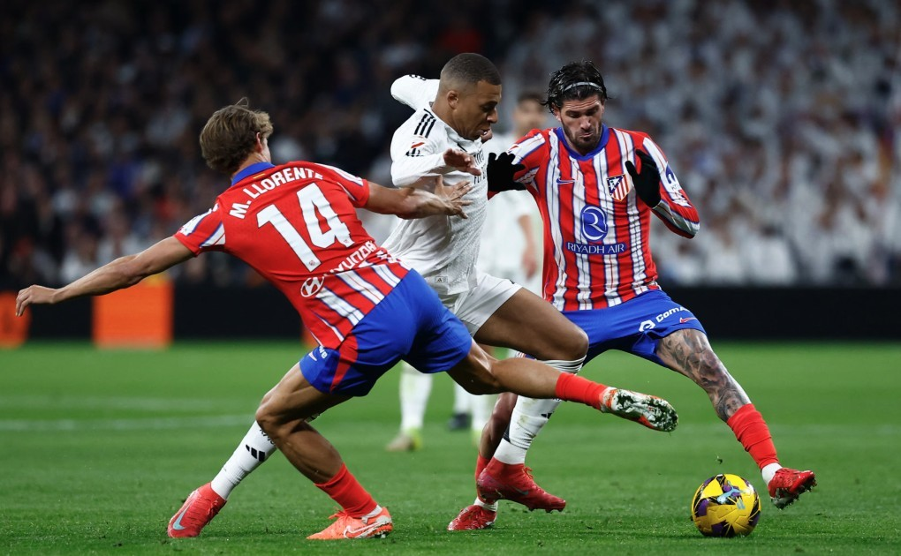
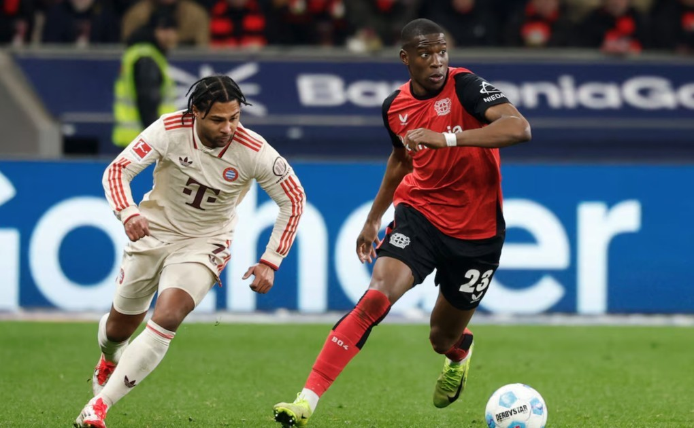

Real gặp Atletico ở vòng 1/8 Champions League
Với việc thể thức mới cho phép các đội cùng quốc gia hoặc từng chạm trán ở vòng bảng gặp nhau, đã có những điều thú vị xảy ra ở buổi lễ bốc thăm tại trụ sở UEFA tại Nyon Thụy Sĩ - nơi các CLB đều cử đại diện tham dự.

Kylian Mbappe đi bóng giữa vòng vây của Marcos Llorente và Rodrigo De Paul ở trận Real hòa Atletico 1-1 vào ngày 9/2.
Ảnh: Reuters
Lá thăm từ tay cựu tiền đạo Bayern Giovane Elber đưa Club Brugge gặp Aston Villa - một cặp đấu được đánh giá là dễ thở cho đại diện Ngoại hạng Anh. Do UEFA đã phân nhánh các cặp đấu ở vòng knock-out từ trước, điều này đồng nghĩa á quân Champions League 2023-2024 Dortmund sẽ gặp Lille.
Ở lượt bốc thăm thứ ba, tên của hai đội bóng thành Madrid Real và Atletico xuất hiện. Đây sẽ là màn tái đấu hai trận chung kết của giải vào năm 2014 và 2016, khi Real đều chiến thắng. Vào ngày 9/2, Real từng tiếp Atletico tại Bernabeu nhưng không thể đánh bại đối thủ. Họ thủng lưới trước bởi quả phạt đền của Julian Alvarez và phải nhờ Kylian Mbappe lập công mới thoát thua.
Trận đấu thứ tư ở vòng 1/8 cũng chứng kiến màn nội chiến giữa Bayern và Leverkusen. Bayern từng sáu lần đăng quang và giàu kinh nghiệm hơn ở Champions League. Tuy nhiên, á quân Europa League mùa trước Leverkusen hứa hẹn không phải đối thủ dễ chơi với "Hùm xám xứ Bavaria". Sự hiểu nhau giữa hai đội, cùng với việc Leverkusen từng vượt qua kình địch để vô địch Bundesliga mùa trước, sẽ khiến gặp đấu này khó lường.

Serge Gnabry (Bayern) tranh chấp với Nordi Mukiele (Leverkusen) trong trận hòa 0-0 tại Bundesliga vào ngày 15/2.
Ảnh: Reuters
Arsenal, đội chỉ có thể gặp một trong hai CLB Hà Lan, bắt được lá thăm chạm trán PSV. Ở vòng bảng mùa trước, hai đội từng gặp nhau và "Pháo thủ" thắng đậm 4-0 ở London trước khi hòa 1-1 trên sân khách. Đội Hà Lan còn lại, Feyenoord, sẽ đối đầu Inter - á quân mùa 2022-2023 và từng ba lần đăng quang.
Trận tứ kết thứ bảy sẽ là cuộc chạm trán giữa hai ứng cử viên vô địch PSG và Liverpool. Lần gần nhất hai đội gặp nhau ở vòng bảng 2018-2019, mỗi đội thắng một trận trên sân nhà của mình. Liverpool từng sáu lần vô địch Champions League và đứng đầu vòng bảng với phong độ cao. Họ sẽ là thách thức lớn cho tham vọng lần đầu vô địch của PSG - đội có thành tích tốt nhất là á quân vào năm 2020.
Hai đội còn lại - Benfica và Barca - chạm trán nhau ở cặp đấu cuối cùng. Hai đội này từng gặp nhau ở vòng bảng. Khi ấy, Barca thắng 5-4 trong trận đấu có tới 9 bàn thắng.
Salah vui mừng sau khi ghi bàn cho Liverpool ở trận thắng Wolves 2-1 tại Ngoại hạng Anh hôm 16/2.
Ảnh: Reuters
UEFA cũng tiến hành bốc thăm phân nhánh tứ kết sau khi xác định các cặp đấu vòng 1/8. Theo đó, đội thắng cặp PSG - Liverpool sẽ gặp đội thắng cặp Club Brugge - Aston Villa. Đội thắng cặp PSV - Arsenal sẽ gặp đội thắng ở cặp Real - Atletico. Đội thắng cặp Benfica - Barca sẽ gặp đội thắng cặp Dortmund - Lille. Đội thắng cặp Bayern - Leverkusen sẽ gặp đội thắng cặp Feyenoord - Inter.
Ở bán kết, đội thắng trận tứ kết 1 (PSG, Liverpool, Club Brugge, Aston Villa) sẽ gặp đội thắng trận tứ kết 2 (PSV, Arsenal, Real, Atletico). Trong khi đó, đội thắng trận tứ kết 3 (Benfica, Barca, Dortmund, Lille) sẽ gặp đội thắng trận tứ kết bốn (Bayern, Leverkusen, Feyenoord, Inter).